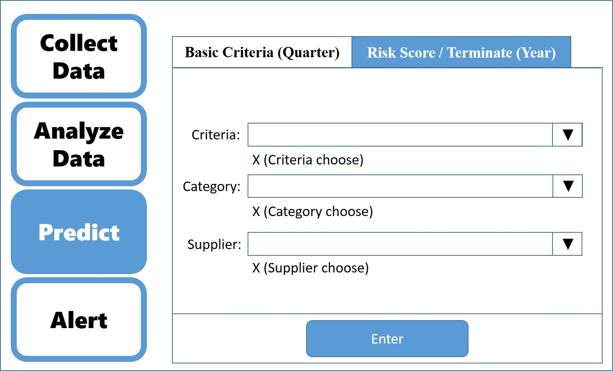

According to the privacy policy, It will be a little different in user interface from the real application.
There are four part in the application.
1. Collect data from many different excel file to one excel file.
2. Analyze the data and choose the data you need to output one excel file.
3. Predict the data due to previous data.
4. Alert the supplier that need to be notice.
Part 1. Collect Data
The company has a lot of company and a lot of different excel file to store the data.
The goal of this part is to put the important part of every file of each criteria into one file
so that the user can easily know where to find the information.
There are three main different file in the company.
The checklist that be done every year, every quarter and others.
There are 4 main criteria in the year checklist and 3 in the quarter.
Press the choose button to choose the file.
For the different type in the same checklist, you can choose 1 to all file.
The system will detect it and do the right action.
Part 2. Analyze Data
After collecting data, although the data is in one file, it will still hard to find the data
because there is too many supplier and too many years and quarter.
In this part, you can get the data you are looking for by selecting year/quarter/category/supplier.
The system will output the information you need into one excel file.
For the risk score, it is a score generate automatically.
It used all the data including which is checked every year and which is check every quarter.
After several calculating, it represent the performance of a supplier in the latest year.
Part 3. Predict
The function of this part is to predict the future performance of the supplier.
The prediction is also seperated to year and quarter.
Choose the criteria/category/supplier and press the enter to see result.
The result is the prediction of the next time period.
After seeing the result, you can press the output to output the result to an excel file.
The prediction model is generate by Artificial Neural Network.
Part 4. Alert
In this part, the data will be mark if it should be notice.
There are several situation (like continuous low-score),
I used Alert 1 / Alert 2 / Alert 3 / ...... for demo.
You can output the result to an excel file by pressing output button.u